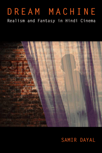

<body bgcolor="#FFFFFF" text="#000000" link="#0000FF" vlink="#CC0000" alink="#CC0000"><center><hr width="350" size="1" align="center" noshade>How Hindi cinema has reflected the Indian public's self-understanding and posited new possibilities for national and individual identities<hr width="350" size="1" align="center" noshade><p><a href="https://cdcshoppingcart.uchicago.edu/Cart/ChicagoBook.aspx?ISBN=9781439910634&&PRESS=temple" target="_top">Buy this book!</a> | <a href="https://cdcshoppingcart.uchicago.edu/Cart/Cart.aspx?PRESS=temple" target="_top">View Cart</a> | <a href="https://cdcshoppingcart.uchicago.edu/Cart/Cart.aspx?PRESS=temple" target="_top">Check Out</a></p><p></p></center><!--none//--><h1>Dream Machine</h1>
<H2>Realism and Fantasy in Hindi Cinema</H2>
<h3>Samir Dayal</h3>
<P>cloth 1-4399-1063-4 $94.50, Jul 15, <FONT COLOR=#990033>Available</FONT>
<br>paper 1-4399-1064-2 $32.95, Jul 15, <FONT COLOR=#990033>Available</FONT>
<br>Electronic Book 1-4399-1065-0 $32.95 <FONT COLOR=#990033>Available</FONT>
<BR> 320 pp
6 x 9
9&nbsp;halftones
</P><BLOCKQUOTE><I>"Dayal�s writing is bright and supple, and his reading of films is consistently interesting and entertaining. The meshing of realism and fantasy in prominent Bollywood films and genres argues that the fantasy elements are integral to imagining �Indianness� over a range of interruptions that trouble a coherent national identity. Dayal avers that fantastic imagination is far more than mere escapism. A very engaging, rewarding project and a solid scholarly book, </i>Dream Machine<i> is also an interesting read for the non-expert cinephile."</i><br>&#151<b>Henry Schwarz</b>, Professor of English at Georgetown University</I></BLOCKQUOTE>
<P>Popular Hindi films offer varied cinematic representations ranging from realistic portraits of patriotic heroes to complex fantasies that go beyond escapism. In <I>Dream Machine</I>, Samir Dayal provides a history of Hindi cinema starting with films made after India�s independence in 1947. He constructs a decade-by-decade consideration of Hindi cinema�s role as a site for the construction of �Indianness.�
<P>Dayal suggests that Hindi cinema functions as both mirror and lamp, reflecting and illuminating new and possible representations of national and personal identity, beginning with early postcolonial films including <I>Awaara</I> and <I>Mother India</I>, a classic of the Golden Age. More recent films address critical social issues, such as <I>My Name is Khan</I> and <I>Fire</I>, which concern terrorism and sexuality, respectively. Dayal also chronicles changes in the industry and in audience reception, and the influence of globalization, considering such films as <I>Slumdog Millionaire</I>.
<P><I>Dream Machine</I> analyzes the social and aesthetic realism of these films concerning poverty and work, the emergence of the middle class, crime, violence, and the law while arguing for their sustained and critical attention to forms of fantasy.
<BR>&nbsp;<h2>Excerpt</h2><P>Excerpt available at <a href="http://www.temple.edu/tempress">www.temple.edu/tempress</a></p>
<BR>&nbsp;<h2>Reviews</h2>
<p><i>"Dayal does an excellent job of bringing together diverse films, theorists, and critics on such issues as cosmopolitanism, secularism, terrorism, gender, and sexuality, often linking his analyses with contemporaneous historical events to provide fuller context. The most exciting aspect of </i>Dream Machine<i> is its new engagement of psychoanalytic theories of fantasy and the production of �Indianness� in transnational Bollywood cinema. This is a fascinating book."</i> <br>&#151<b>Kavita Daiya</b>, Associate Professor of English at George Washington University
<p><i>"Bollywood embraces an astounding range of cinematic genres yet seems determined to stay rooted in family issues, tales of star-crossed romance, and, of course, musical numbers thrown in seemingly at whim. Hindi cinema has a reputation for being designed primarily to please the largest possible number of audience members, and </i>Dream Machine<i>, which tracks the Bollywood production juggernaut�arguably the world�s most prolific film factory�examines an enormous amount of material, from 1947 to the present. Many of the films Dayal discusses in this dense, deftly structured volume have not been seen in the West.... The copious citations throughout the text demonstrate Dayal�s unquestionable scholarship. Summing Up: Recommended."</i><br>&#151<b><i>CHOICE</i></b>
<p><i>"Dayal carefully embarks upon detailed textual analysis of [Hindi] films, showing the complicated relationship between realism and fantasy in Bombay cinema...to represent the irreconcilable hidden contradictions of Indian society..... Dayal�s book clearly provides a wide range of films that address various different sociopolitical themes and subjects.... </i>[Dream Machine]<i> offers interesting theoretical backings as well as new insights to understand several popular films."</i><br>&#151<b><i>Studies in South Asian Film & Media</i></b>
<BR>&nbsp;<h2>Contents</h2><P>
<p>Acknowledgments
<br>Introduction � Mirror and Lamp
<p><b>Part I: Postcolonial Hindi Cinema: Bad Subjects and Good Citizens</b>
<br>1. The Wish to Belong, the Desire to Desire: The Emergent Citizen and the Hindi �Social� in Raj Kapoor�s <i>Awaara</i>
<br>2. A Bad Son and a Good Enough Mother? The Paradoxical Maternal Romance in Mehboob Khan�s <i>Mother India</i>
<br>3. Sexploitation or Consciousness Raising? The Angry Man, the Avenging Woman, and the Law
<p><b>Part II: Reimagining the Secular State</b>
<br>4. Terrorism or Seduction
<br>5. Patriot Games, Unpatriotic Fantasies
<p><b>Part III: Diasporic Cinema and Fantasy Space: Nonresident Indian Aliens and Alienated Signifiers of Indianness</b>
<br>6. The Powers of the False: Fantasy Spaces for Same-Sex Love?
<br>7. The New Cosmopolitanism and Diasporic Dilemmas: Rehabilitating the �NRI�
<br>8. Poverty Porn and Mediated Fantasy in Danny Boyle�s <i>Slumdog Millionaire</i>
<p>Conclusion � Transnational Translations: Mobile Indianness
<br>Notes
<br>Bibliography
<br>Index
</P><BR>&nbsp;<H2>About the Author(s)</H2>
<P><b>Samir Dayal</b> is a Professor of English and Media Studies at Bentley University in Massachusetts. He is the author of <i>Resisting Modernity: Counternarratives of Nation and Masculinity in Pre-Independence India</i>; a co-editor, with Margueritte Murphy, of <i>Global Babel: Questions of Discourse and Communication in a Time of Globalization</i>; and the editor of the Cultural Studies Series, which includes Julia Kristeva�s <i>Crisis of the European Subject</i>.</P>
<BR><H2>Subject Categories</H2>
<p><A HREF="/tempress/asian.html" TARGET="_top">Asian Studies</a>
<BR><A HREF="/tempress/cinema.html" TARGET="_top">Cinema Studies</a>
<BR><A HREF="/tempress/cultural.html" TARGET="_top">Cultural Studies</a>
</p>
<p align="center"><a href="https://cdcshoppingcart.uchicago.edu/Cart/ChicagoBook.aspx?ISBN=9781439910634&&PRESS=temple" target="_top">Buy this book!</a> | <a href="https://cdcshoppingcart.uchicago.edu/Cart/Cart.aspx?PRESS=temple" target="_top">View Cart</a> | <a href="https://cdcshoppingcart.uchicago.edu/Cart/Cart.aspx?PRESS=temple" target="_top">Check Out</a></p><p><font face="Arial" size="1"><a href="copyright.html" onMouseOver="window.status='Web Copyright Policy';return true;" onMouseOut="window.status=''" title="Web Copyright Policy">&copy;</a> 2016 <a href="http://www.temple.edu" target="new" onMouseOver="window.status='Link to Temple University home page';return true;" onMouseOut="window.status=''" title="Link to Temple University home page">Temple University</a>. All Rights Reserved. http://www.temple.edu/tempress/titles/2288_reg.html</font></p>